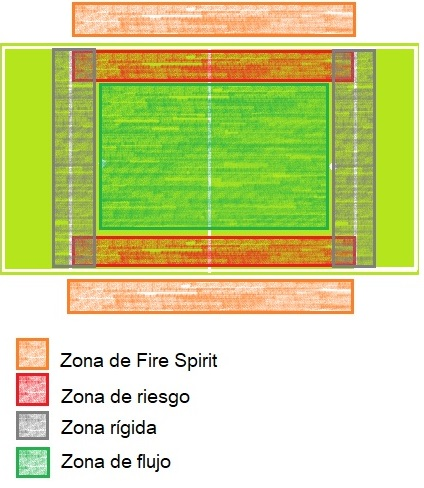
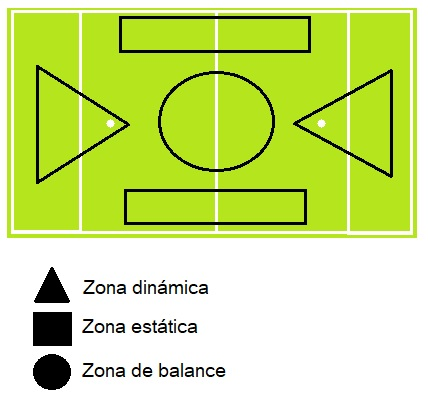
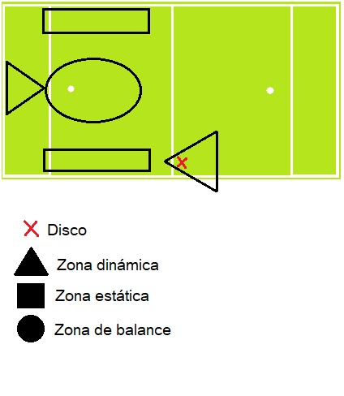

Las zonas laterales fuera del campo son las zonas para implmentar el Fire Spirit
Las zonas de riesgo son los costados laterales dentro del campo, sin embargo, estas tienen diferentes significados dependiendo si es ataque o defensa.
Las zonas rígidas son aquella donde las tareas han de ser específicas. Estas también son dependientes del momento
Las zonas de flujo es donde realizan los movimientos del disco. Da la oportunidad de leer el juego del contrario.
Las zonas estáticas permiten calma y medición del entorno.
Las zonas dinámicas son de alta inntesidad, de ejecución y de liberación de espacio.
La zona de balance es el espacio para identificar el juego y realizar robos.
Las zonas de paneo son relativas al disco, de acuerdo con el avance, cambian.
